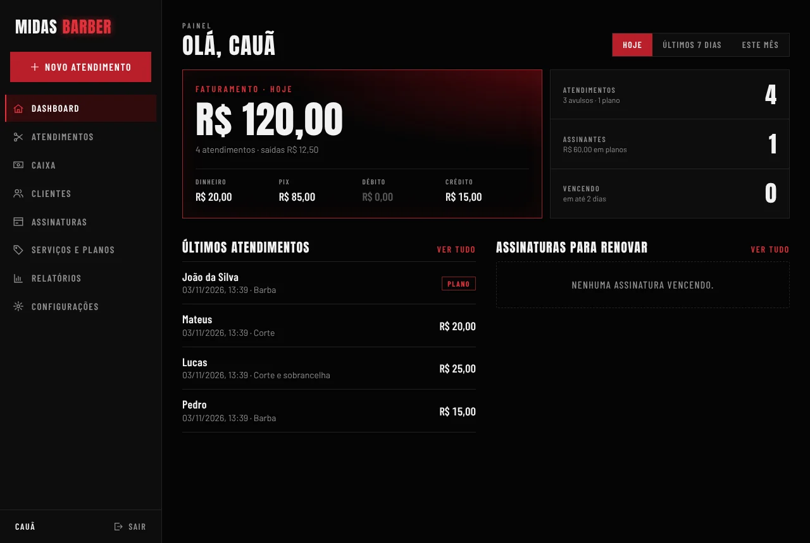

Midas Barber — Sistema de Gestão para Barbearia
Sistema web sob medida para a barbearia controlar caixa, atendimentos, clientes e assinaturas mensais. Funciona como app no celular (PWA) e no computador.
- Assinaturas com ciclos, renovação sem perda de dias, planos Solo, Dupla e Família e cotas por serviço.
- Check-in de assinante com bloqueio por vencimento e lembretes de vencimento via WhatsApp.
- Caixa com abertura, entradas, saídas e fechamento conferido; dashboard de faturamento por forma de pagamento.
- Segurança: senhas em Argon2id, sessão em cookie seguro, Row Level Security e validação no servidor.
- Regras de negócio cobertas por testes automatizados.
Projeto pago, desenvolvido para cliente.